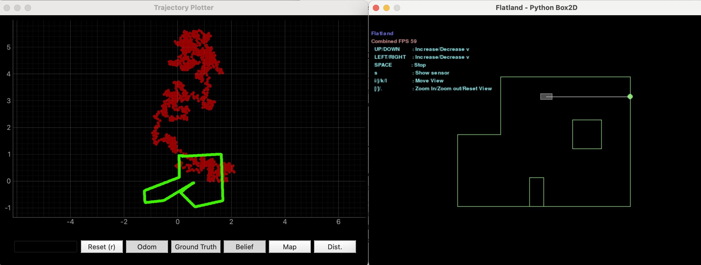
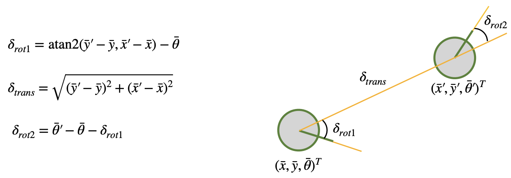
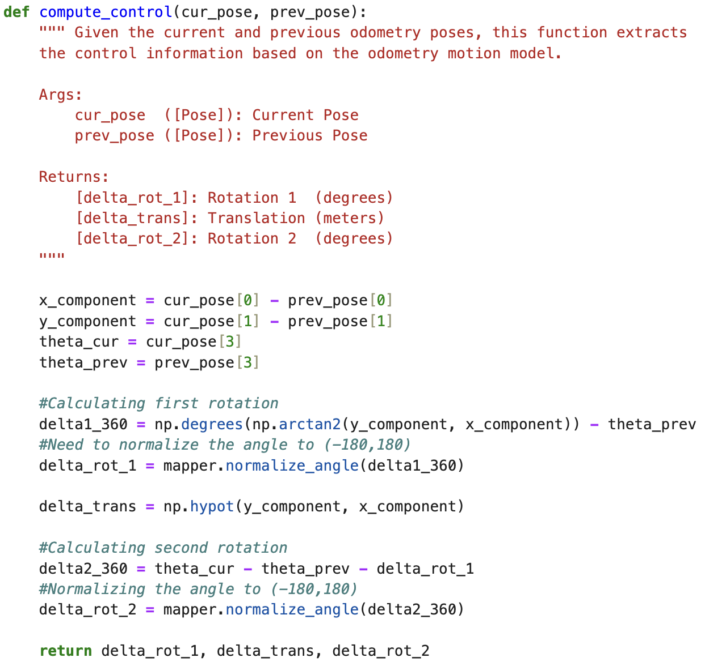
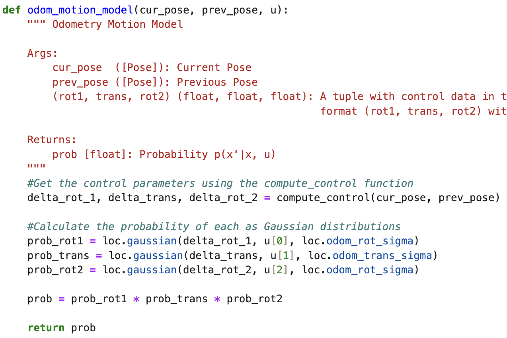
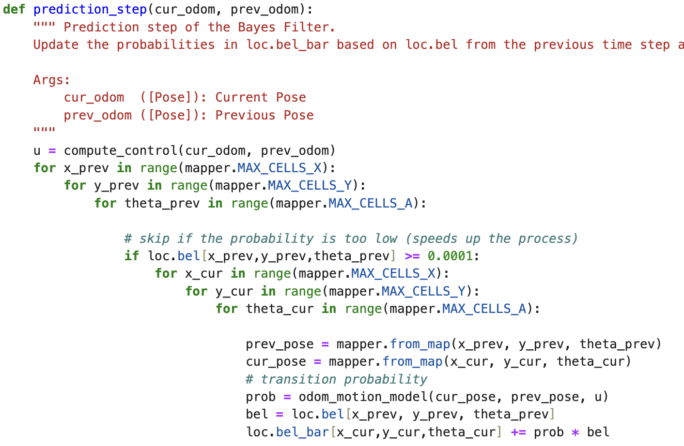

I followed the instructions provided in the Simulation tool—installing all dependencies, the appropriate wheel file for my OS and Python version, and the Box2D library. Using the GUI, I explored various commands to observe how the robot would respond. I used Open Loop Control to navigate the robot through the space and observed that movement commands continued indefinitely unless explicitly counteracted by an opposing command. Below is a plot comparing the robot’s odometry with the ground truth for the trajectory I created.
Analyzing the odometry plot (the red dots) it does not look accurate at all. However, the ground truth plot (green dots) seem accurate with just a few undershooting angles in a few turns.
The following function were written to run the Bayes Filter.
The compute_control() function calculates the first rotation, translation, and second rotation by using the robot’s current pose and previous pose as inputs. The equations used for these calculations are shown below (from Lecture 18).
To simplify the equations in Pyhton, I created a variable called x_component to store the difference between the x-coordinates of the current and previous poses. I did the same for the y-coordinates.
The odom_motion_model() function also takes in the current pose and previous pose, but it additionally considers the odometry control input. It uses the parameters calculated by the compute_control() function and estimates the probability that the robot reached its current position given the previous pose. These probabilities are modeled using a Gaussian distribution.
The prediction_step() function calculates the probability that the robot is in each cell of the grid. It does this by taking the current and previous poses and iterating through the entire grid to compute a predicted belief using the odom_motion_model() function.
To reduce computational load, the function skips calculations for cells where the probability drops below 0.0001, since the likelihood of the robot being in those cells is very low. While this speeds up the process, it can slightly reduce the precision and accuracy of the filter.
...
...
...
For this lab I referenced, Stephan Wagner's and Mikayla Lahr's labs from previous years. I also used ChatGPT to help with the grammar.